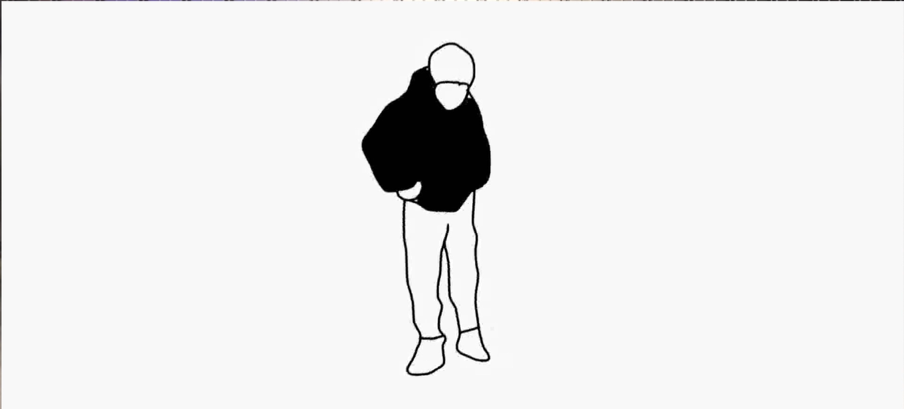
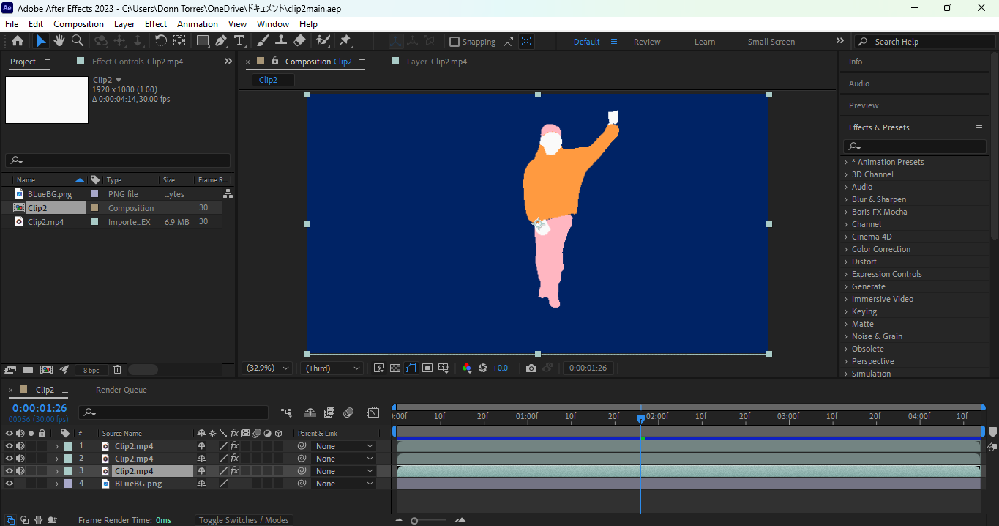

Welcome
Hello! This is the beginning of my Multimedia & Authoring website.
Writing the skeleton html code for now..
1 minute rotoscope

Find Source video
Select source video with a time duration of one minute and a human subject
Cut the video in 5 second intervals

Use proper editing tools and prepare the layout and timing
Use Rotoscope tools like adobe after effects

Using adobe after effects for rotoscoping